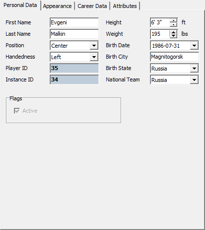
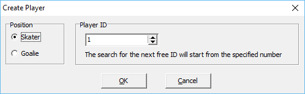

This page regroups the general information fields:

Player Personal Data
Most fields are self-explanatory so only the particularities will be documented below. The description is for fields of NHL 14 which might differ or not exist at all in previous versions of the game:
Position - Determines the player's position. A skater cannot be changed to a goalie and vice versa. Moreover, player style is dependent on position. So if you change a defenseman to a center, his player style will change.
Player ID - Unique identifier of the player in the database. All player instances will have the same identifier. This value is read-only.
Instance ID - Identifier of the currently selected player instance. Whenever a player is copied to another team, a new instance is created with a globally unique identifier. This value is read-only.
Height/Weight - Depending on the unit system selected in the main menu, you may edit player's height and weight in feet/inches and pounds or in centimeter and kilograms.
Birth State - The country/state where the player was born.
National Team - The country for which the player plays in international competitions.
Flags
Active - This flag signals to the game whether a placeholder player is activated or hidden. Placeholder slots are used by in-game Create A Player mode. Until the player is created, the slot contains no data and is not active. Inactive placeholders are shown with a different color in the players list. This flag has no effect on built-in players. NHLView will automatically activate a placeholder player when he is moved to a team on the Transactions tab. Moreover, it is impossible to deactivate a placeholder player until he is present on at least one team. Only placeholders in Hidden Pool can be deactivated.
Player Creation
You may create new players by using "Database/Create Player..." command from the menu. This will show the following dialog:

Player Creation
Please note that this feature is not very well tested and modifies the database in a way the game may not expect. It is therefore advisable to make a backup copy of the roster before using this functionality.
You need to choose whether you want to create a skater or a goalie and optionally assign an ID to the player. After clicking OK, NHLView will search for the next available ID equal to or greater than the ID chosen above. If player creation is successful, the newly created player will be highlighted player's list. Please note that you will still need to use in-game Edit Player function to adjust the player's equipment because NHLView currently does not support equipment editing and will assign invalid values to the new player. If you do not assign the equipment in the game, the player may have various graphical glitches.